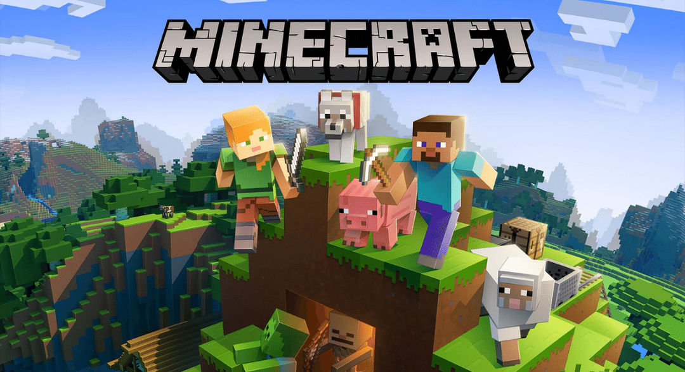
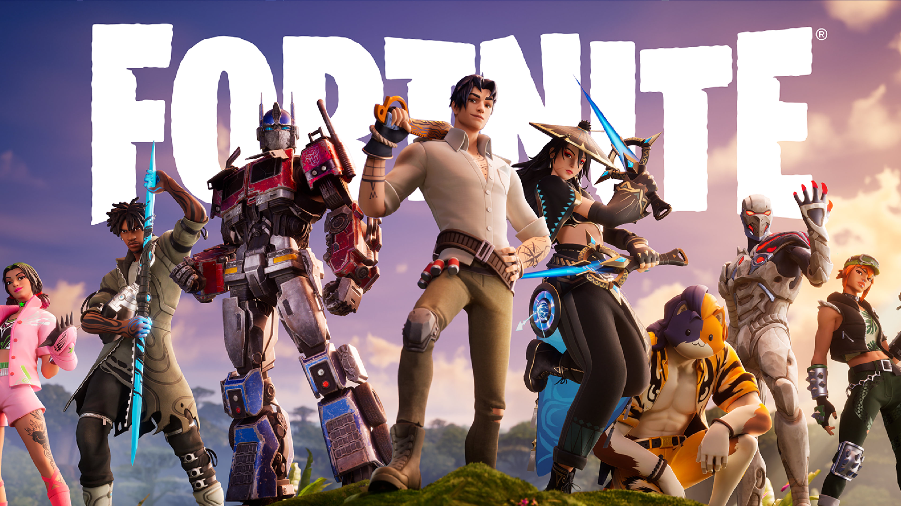

Minecraft was the number 1 PC game in August 2023, based on the number of monthly active users or players. Minecraft is a Sandbox game developed by 4J Studios that can be played on Linux , Nintendo Switch , New Nintendo 3DS , Windows , Android , Xbox 360 , PlayStation 4 , Wii U , Windows Phone , iOS , Mac , Xbox One , PlayStation Vita , and PlayStation 3 . In August 2023 Minecraft was ranked 6 on popular streaming platform Twitch based on 43 million hours watched. The game was published by Mojang Studios on 10-12-2014
Fortnite was the number 2 PC game in August 2023, based on the number of monthly active users or players. Fortnite is a Battle Royale game developed by Epic Games that can be played on PlayStation 5 , Android , PlayStation 4 , Xbox Series X|S , Nintendo Switch , iOS , Xbox One , Windows , and Mac . In August 2023 Fortnite was ranked 7 on popular streaming platform Twitch based on 43 million hours watched. The game was published by Epic Games on 21-12-2017
The Sims 4 was the number 3 PC game in August 2023, based on the number of monthly active users or players. The Sims 4 is a Simulation game developed by Blind Squirrel that can be played on Xbox One , PlayStation 4 , Windows , Mac , and PC (Steam) . In August 2023 The Sims 4 was ranked 82 on popular streaming platform Twitch based on 2 million hours watched. The game was published by Electronic Arts on 02-12-2014

ROBLOX was the number 4 PC game in August 2023, based on the number of monthly active users or players. ROBLOX is a Sandbox game developed by Roblox Corporation that can be played on Windows , Xbox One , Android , iOS , and Mac . In August 2023 ROBLOX was ranked 46 on popular streaming platform Twitch based on 4 million hours watched. The game was published by Roblox Corporation on 01-12-2006

League of Legends was the number 5 PC game in August 2023, based on the number of monthly active users or players. League of Legends is a Battle Arena game developed by Riot Games that can be played on Mac , and Windows . In August 2023 League of Legends was ranked 3 on popular streaming platform Twitch based on 93 million hours watched. The game was published by Riot Games on 27-12-2009

Baldur's Gate III was the number 36 PC game in July 2023, based on the number of monthly active users or players. Baldur's Gate III is a Role Playing game developed by Larian Studios that can be played on PC (Steam) , Xbox Series X|S , PlayStation 5 , Mac , and Windows . In July 2023 Baldur's Gate III was ranked 5 on popular streaming platform Twitch based on 45 million hours watched. The game was published by Larian Studios on 03-12-2023

Call of Duty: Modern Warfare II/Warzone 2.0 was the number 7 PC game in August 2023, based on the number of monthly active users or players. Call of Duty: Modern Warfare II/Warzone 2.0 is a Battle Royale game developed by Infinity Ward that can be played on Xbox One , Windows , Xbox Series X|S , PlayStation 4 , PlayStation 5 , and PC (Steam) . In August 2023 Call of Duty: Modern Warfare II/Warzone 2.0 was ranked 29 on popular streaming platform Twitch based on 8 million hours watched. The game was published by Activision Publishing on 27-12-2022

Valorant was the number 8 PC game in August 2023, based on the number of monthly active users or players. Valorant is a Shooter game developed by Riot Games that can be played on Windows . In August 2023 Valorant was ranked 2 on popular streaming platform Twitch based on 100 million hours watched. The game was published by Riot Games on 02-12-2020

Grand Theft Auto V was the number 8 PC game in July 2023, based on the number of monthly active users or players. Grand Theft Auto V is a Adventure game developed by Rockstar North that can be played on Xbox One , Xbox 360 , PC (Steam) , Xbox Series X|S , PlayStation 3 , PlayStation 5 , Windows , and PlayStation 4 . In July 2023 Grand Theft Auto V was ranked 1 on popular streaming platform Twitch based on 102 million hours watched. The game was published by Rockstar Games on 17-12-2013

Overwatch 1 & 2 was the number 10 PC game in August 2023, based on the number of monthly active users or players. Overwatch 1 & 2 is a Shooter game developed by Blizzard Entertainment that can be played on Xbox Series X|S , Windows , PlayStation 5 , PC (Steam) , PlayStation 4 , Nintendo Switch , and Xbox One . In August 2023 Overwatch 1 & 2 was ranked 15 on popular streaming platform Twitch based on 20 million hours watched. The game was published by Blizzard Entertainment on 24-12-2016